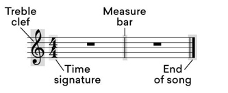
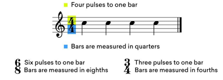

Compases y métricas
Hay un pulso subyacente en toda la música que puede contener en una medida de tiempo específica. Esta medida de tiempo se conoce como un compás.
En la música occidental, la métrica de una canción determina cómo se mide el pulso de cada compás y el tempo define qué tan rápido es el pulso. El pulso se representa con un símbolo que parece una fracción y dicta el número de notas por compás y cómo se cuenta cada nota en términos de blancas, negras, corcheas o semicorcheas. Tomemos la métrica más común en la música–4/4. El número de arriba dice que hay cuatro pulsos en un compás y el número de abajo dice que estos pulsos se miden en términos de negras.
Pero claro, hay muchas métricas en la música distintas a 4/4.